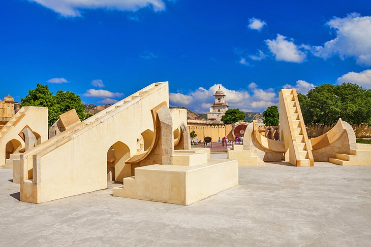

About Jaipur
- Jaipur is the Capital and the largest city of the Indian state of Rajasthan.
- Jaipur was founded in 1727 by the Rajput ruler Jai Singh II, the ruler of Amer, after whom the city is named.
- It was one of the earliest planned cities of modern India, designed by Vidyadhar Bhattacharya.
- Jaipur is also known as the Pink City, due to the dominant color scheme of its buildings.[1]

Tourism in Jaipur
Jaipur is a popular tourist destination in India and forms a part of the west Golden Triangle toursit circuit along with Delhi and Agra. It also serves as a gateway to other tourist destinations in Rajasthan such as Jodhpur, Jaisalmer, Udailpur, kota and Mount Abu.[1]